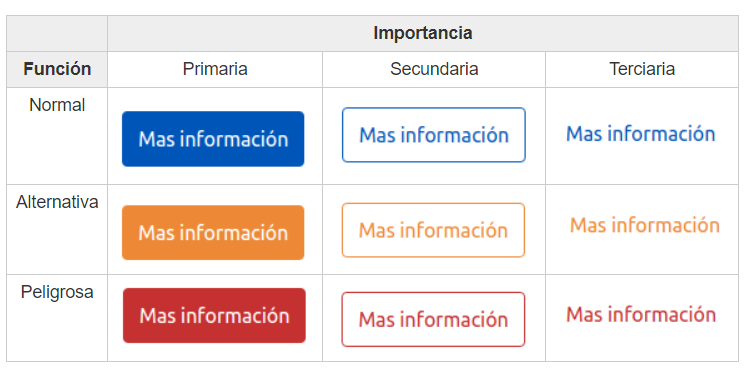

Botones
Los botones tienen 2 características:
- Importancia: Es si queremos o no que el usuario pulse ahí. A mayor importancia es que queremos que mas veces pulse en ese botón.
- Función: Es para decir al usuario que tipo de acción está realizando. Por ejemplo , la función "Peligrosa" es roja y nos quiere decir que tengamos cuidado al pulsar ahí.
